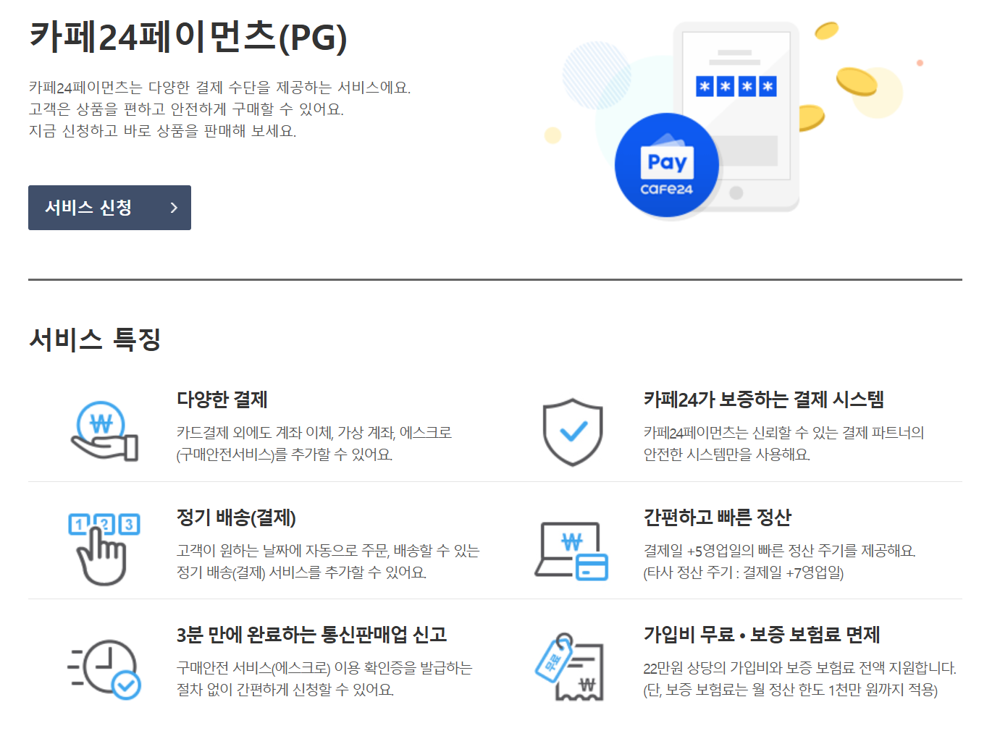
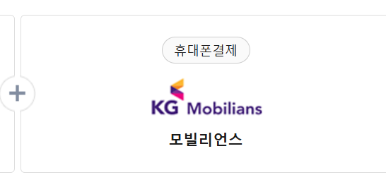

디자이너 사이트 가이드
사전 준비
*대표님께 전달드릴 가이드 파일_pdf(참고용으로 확인해주세요.)대표님께 받아야 할 자료
1. 로고 / 2. 상세페이지·썸네일 / 3. 레퍼런스 (동적 효과 필수) *상세페이지·썸네일: PG사 신청 시 1개의 상품은 필수적으로 있어야 하기 때문에 받아둬야 함. *레퍼런스: 레퍼런스를 통해 비슷한 cafe24 스킨 구매가 가능하므로, 가능한 링크로 받아두는 게 좋음.PG사 신청 요청
CAFE24 → 부가서비스 → 통합결제(PG) / 카페24페이먼츠(pg)에 있음.


- 1. CAFE24 페이먼츠
- - 심사가 복잡하여 사업자등록증 (3개월 이내) & 통신 판매업 (3개월 이내)로 신청해야 함. *cafe24는 대표님이 신청하셔야 함.
- - 실제 운영하는 쇼핑몰처럼 보여야하기 때문에 최소 상품 1개 이상은 등록해야 하며, 해외 배송이나 프리오더라는 단어가 사이트에 들어가면 안 됨.
- - 푸터와 사업자등록증 주소가 일치해야 함. 대략 7일 정도 소요되며 한 번 반려될 경우 서류가 더 깐깐해지므로 한 번에 승인되는 게 좋음.
- 2. 모빌리언스
- - CAFE24 페이먼츠에 비해 비교적 간단한 편. 신청은 자사에서 가능함.
- - CAFE24가 PC 결제가 가능하다면 모빌리언스는 모바일에서 결제하기 위해 신청함.
- - 서류도 그렇게 복잡하지 않고, 3일 이내는 신청이 완료됨.
- *디자인 스킨만 구매하고 나서, 커스텀 하기 전에 pg사 먼저 신청하는 것이 작업할 때 효율적임.
사이트 작업
작업 순서 정하기
 - cafe24 로그인 → 디자인 → 디자인 보관함 → 디자인 편집 만에 하나 상황으로 구매한 스킨은 제작하기 전에 꼭 복사 해 주세요.
- header → footer → menu(nav) → main → sub page(상세페이지/상품 리스트/마이 페이지 등)
작업이 끝나면 사이트 주소와 함께 피드백 요청 해 주세요.
- cafe24 로그인 → 디자인 → 디자인 보관함 → 디자인 편집 만에 하나 상황으로 구매한 스킨은 제작하기 전에 꼭 복사 해 주세요.
- header → footer → menu(nav) → main → sub page(상세페이지/상품 리스트/마이 페이지 등)
작업이 끝나면 사이트 주소와 함께 피드백 요청 해 주세요.
제작하기 전 주의사항
- 1. 모듈은 될 수 있으면 건드리지 말아주세요. 모듈 잘못 건드릴 시, 사이트 동작이 안 됩니다.
- 2. cafe24는 바닐라 스크립트를 주로 사용하며, jQurey는 될 수 있으면 사용하지 말아주세요.
- 3. 사이트 저장을 했는데 바뀌지 않을 경우, 사이트 캐시 삭제를 해 주시면 동작됩니다. (그래도 동작이 안 될 경우 인터넷 브라우저 캐시 삭제를 해 주세요.)
- 4. 수정할 페이지의 경로를 못 찾겠다 싶으면 사이트에 들어가서 url 확인하면 경로가 나옵니다. (ex. product/list.html)
- 5. CAFE24는 대부분 관리자 페이지와 연동이 되어 있습니다. 구현하실 때 inline Tag로 되어있는 코드들은 대부분 CAFE24 관리자 페이지에서 수정하실 수 있으며, 모듈 역시 관리자 페이지와 연동이 되어 있습니다.
피드백 받기
작업이 끝나면 사이트 주소와 함께 피드백 요청 해 주세요.도메인 작업 시작하기
 - 쇼핑몰 설정 → 기본 설정 → 도메인 설정에서 cafe24에서 구매한 경우 도메인 관리에서 도메인 연결
- 대표 도메인 연결에서 구매한 도메인이 안 뜰 경우 네임 서버가 등록이 되지 않아서이므로, 도메인 설정에서 네임 서버 등록
cafe24 챗봇은 굉장히 자세하게 알려주므로 헷갈리는 경우 챗봇 문의를 통하여 문의할 것
- 쇼핑몰 설정 → 기본 설정 → 도메인 설정에서 cafe24에서 구매한 경우 도메인 관리에서 도메인 연결
- 대표 도메인 연결에서 구매한 도메인이 안 뜰 경우 네임 서버가 등록이 되지 않아서이므로, 도메인 설정에서 네임 서버 등록
cafe24 챗봇은 굉장히 자세하게 알려주므로 헷갈리는 경우 챗봇 문의를 통하여 문의할 것